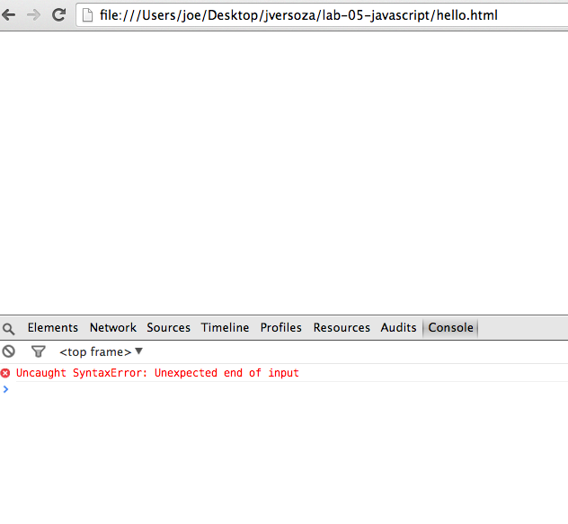
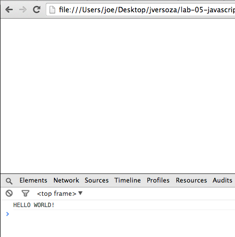

Lab 5 - Part 1 - Using Version Control Review, JavaScript
In this lab, you’ll be:
- creating two repositories, one local and one remote
- linking the two with each other so that they can be synchronized
- associating a name and email address with your local repository
- creating, editing and saving a JavaScript program in your local repository
- sending those changes to your remote repository on github
Instructions
Set up Your Local Repository
This will create a local git repository to store your work for this lab. The repository will be in ~/Desktop/yourname/lab-05-javascript.
- open terminal
- (if doesn’t already exist) create a folder that consists of your first initial and last name on your Desktop
cd ~/Desktop
mkdir myname
- within that folder, create another folder called lab-05-javascript and change into it
cd myname
mkdir lab-05-javascript
cd lab-05-javascript
- use pwd to verify that you’re in the correct folder
- you should be in ~/Desktop/myname/lab-05-javascript
- if you’re not, cd into it
- to prove that this is not yet a repository, list all files in your current directory
ls -al
- it should mostly be empty
total 0
drwxr-xr-x 2 bree staff 68 Feb 26 07:52 .
drwxr-xr-x 3 bree staff 102 Feb 26 07:52 ..
- in your lab-05 folder, create your repository!
git init
- it should say:
Initialized empty Git repository in /Users/bree/Desktop/bzuckerman/lab-05-javascript/.git/
- show that this worked by listing all files in your current directory
ls -al
- check that this shows .git
- use ls .git to show the contents of your repository (it should contain a configuration file, for example)
ls .git
- configure your user name and email for your commits (these do not have to be the same as your github account)
# in the directory of your repository
git config user.name "my user name"
git config user.email "my@email.address"
- finally, use git config again to see if this worked:
git config -l
- (use should see your name and email appear in the configuration)
Create Your Remote Repository
This will create a remote git repository on github. It will also link your local repository with this remote repository. In order to submit your work, you will send your files / changes from your local repository to the remote repository on github.
- log in to github; you should see the list of repositories on the right

- you should have 4 lab related repositories (or less if you missed a lab!)
- go back to terminal
- using the commandline, create a remote repository on github by using the command below…
- substitute your github username where it says “your github user name” (keep the single quotes and KEEP “name”: at the end of the line; don’t change that!). the name of the repository is lab-05-javascript (you can see that specified at the end of the command)
curl -u 'your github user name' https://api.github.com/user/repos -d '{"name":"lab-05-javascript"}'
- it should output a bunch of text!
Enter host password for user 'bzuckerman':
{
"id": 17210769,
"name": "lab-05-javascript",
"full_name": "bzuckerman/lab-05-javascript",
"owner": {
"login": "bzuckerman",
...
}
- refresh your page on github
- you should see the new repository added
- go back to terminal
- make sure you’re in your local repository folder for lab-05-javascript
- use pwd to do this
- you should be in ~/Desktop/yourname/lab-05-javascript
- if you’re not in your lab folder, change your directory to it
- run this command to show that you have not linked your local repository to any remote repository yet
git remote -v show
- it should do nothing
- now, link your local repository to your remote repository on github by using git remote add (make sure to substitute your github username where it says “[your github user name]”)
git remote add origin https://github.com/your github user name/lab-05-javascript.git
- (alternatively, if you click on your repo you can see your remote repository’s url on the lower right hand side of the page…)

- to check that you’ve linked properly, run the following command again:
git remote -v show
- it should show origin … and your repository url
origin https://github.com/bzuckerman/lab-05-javascript.git (fetch)
origin https://github.com/bzuckerman/lab-05-javascript.git (push)
Creating and Saving Changes Locally, Sending to Remote Repository
In this part of the lab, you will create a text file in your local repository, and then you’ll send it to your remote repository.
- open terminal
- make sure you’re in your local repository folder for lab-05-javascript
- use pwd to do this
- you should be in ~/Desktop/yourname/lab-05-javascript
- if you’re not in your lab folder, change your directory to it
- if this doesn’t exist yet… make sure you completed the beginning part of this lab
- use git status to show that there aren’t any changes yet
git status
- it should give the following output
# On branch master
#
# Initial commit
#
nothing to commit (create/copy files and use "git add" to track)
- create a file called README.markdown using SublimeText (see below…)
- go to Applications → SublimeText (or use Command+Spacebar to activate spotlight search, then start typing Sublime)
- once SublimeText is open, go to File → New (or Command+n) to create a new file
- save your file by going to File → Save As to save your files as README.markdown in your ~/Desktop/yourname/lab-05-javascript

- make sure you navigate to your ~/Desktop/yourname/lab-05-javascript before saving!

- switch back to terminal
- use git status to show that you’ve made changes
git status
- it should give the following output; notice that it contains README.markdown
# On branch master
#
# Initial commit
#
# Untracked files:
# (use "git add <file>..." to include in what will be committed)
#
# README.markdown
nothing added to commit but untracked files present (use "git add" to track)
- if we want to save this file in the repository, we have stage it (that is, mark it as something that we’re ready to save / commit)
git add --all
- to check that you’ve staged your commit, use git status again
git status
- it should output the following text (note that README.markdown moved from untracked to Changes to be committed)
# On branch master
#
# Initial commit
#
# Changes to be committed:
# (use "git rm --cached <file>..." to unstage)
#
# new file: README.markdown
#
- now we’re ready to commit (that is, save the file to the local repository); everything after the -m is the message that will be associated with the changes that you’ve made
git commit -m "added a README file"
- the output of the command should be:
[master (root-commit) 5b24d27] added readme
1 file changed, 0 insertions(+), 0 deletions(-)
create mode 100644 README.markdown
- check the status again
git status
- notice that there is nothing staged and no more changes!
# On branch master
nothing to commit, working directory clean
- to show the changes that you’ve saved so far, use git log
git log --color
- it should show you the following…
commit 5b24d2777a602908978916ca8fe9c8dd2ed6036b
Author: bree <bzuckerman@citytech.cuny.edu>
Date: Wed Mar 5 11:45:21 2014 -0500
added readme
- you can share your changes / send them to a remote repository by using git push
git push origin master
- it should result in:
Counting objects: 3, done.
Writing objects: 100% (3/3), 242 bytes | 0 bytes/s, done.
Total 3 (delta 0), reused 0 (delta 0)
To https://github.com/bzuckerman/lab-05-javascript.git
* [new branch] master -> master
- go back to github and look in your repository. you should see that file appear.
- go back to SublimeText
- add two lines to your README.markdown file
This is lab 05
It's about JavaScript
- save your file: File → Save or Command+s
- go back to terminal
- use git diff to show your changes
git diff --color
- use git status, add and then commit to save your changes
- use git push to send them to your remote repository
- if you click through the filename on github, you’ll see your changes
Writing Hello World! With a Mistake (Sad Face)
- create a file called hello.html using SublimeText
- (if it’s not already open) go to Applications → SublimeText (or use Command+Spacebar to activate spotlight search, then start typing Sublime)
- go to File → New (or Command+n) to create a new file
- save your file by going to File → Save As to save your files as hello.html in your ~/Desktop/yourname/lab-05-javascript
- make sure you navigate to your ~/Desktop/yourname/lab-05-javascript before saving!
- switch back to terminal
- use git status to show that you’ve made changes
- use add and commit to save this new file - make sure you type a message with commit (-m ‘your message here’)
- go back to sublime text
- add the following text to your file:
<!DOCTYPE html>
<html>
<body>
<script>
// oops... there's an error here
console.log("HELLO WORLD!"
</script>
</body>
</html>
- (you can also start typing in html and press tab… then fill in the missing bits)
- save your file
- open chrome
- go to File → Open File → and browse to ~/Desktop/yourname/lab-05-javascript to open your hello.html file
- you should see a blank page!
- in Chrome, go to View → JavaScript Console… it should pop-up a panel: 
- notice the red x and message: “Uncaught SyntaxError: Unexpected end of input”
- go back to terminal to use status, add and commit to save your changes. for your commit message, you should write: -m “broken version of hello world”
Fixing Hello World
- go back to SublimeText
- add a closing parenthese and a semicolon… and remove the line that says “// oops… theres an error here” so that your code looks like this:
<!DOCTYPE html>
<html>
<body>
<script>
console.log("HELLO WORLD!");
</script>
</body>
</html>
- save your file
- go back to Chrome
- if your console isn’t open, reveal it by going to View → Developer → JavaScript Console (or Command+Option+j)
- refresh the page by using Command+Shift+r (or go to View → Reload this page)… you should see the following message in the console 
- “Hello World”
- once you have your program fixed…
- go back to terminal to use status, add and commit to save your changes. for your commit message, you should write: -m “fixed hello world”
- use git log to show all of your changes so far
- send your changes to github, and show me the files on github when your finished
- when you’re done, help your neighbor and/or read the introduction to the second edition of Eloquent JavaScript